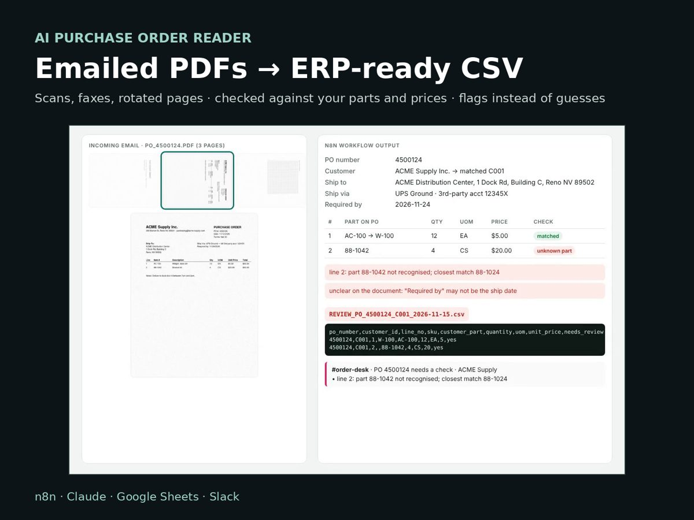

PDF orders and invoices → clean CSV
For teams that retype purchase orders or invoices into an ERP or accounting tool. Every customer layout works, including scans and rotated faxes, with no per-customer templates.
- PDFs picked up from an inbox or an upload form
- PO or invoice number, customer, addresses, line items, prices, dates
- Checked against your customer and item lists
- One CSV per document in your import format, plus a log sheet
- Slack or email alert when a document needs a human look